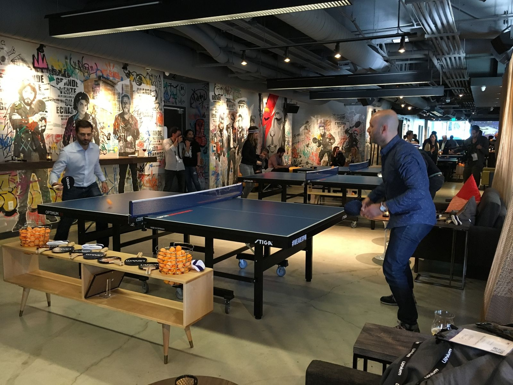

Ping pong · Battersea
Bounce, Battersea
- Ping pong, Ping Pong X and beer pong inside Battersea Power Station, with a bar and kitchen.
- From £6 per person, £8 for Ping Pong X — the same as Bounce's other London sites.
- Bookings of up to 16 people share one table; bigger groups get more.
- Under-18s welcome before 6pm (all day Sunday); 18+ only in the evenings.

Photo of ping pong, not this specific venuePhoto: Jeff Terrell / Wikimedia Commons, CC BY 2.0
What is Bounce, Battersea?
Bounce is a ping pong bar with 17 tables split between classic ping pong, Ping Pong X (tables with AI tracking and automatic scoring) and beer pong. Battersea is Bounce's newest London site, set inside Turbine Hall B of the redeveloped Battersea Power Station, with a bar, a kitchen and resident DJs.
It's one of three London Bounce venues, alongside Farringdon and Old Street.
How does it work?
You book a table for your group, and the number of guests determines how many tables you get: bookings of up to 16 people share one table, with larger groups split across more under Bounce's table allocation policy. Games Gurus can be added to host a group's session with extra games and competitive rounds.
Under-18s are welcome Monday to Saturday before 6pm, and all day Sunday, with one adult aged 21 or over required for every five children in the group. It's 18+ only in the evenings, and photo ID may be requested under Bounce's Challenge 25 policy.
How much does it cost?
- 25 minutes: £6 per person.
- 55 minutes: £8 per person.
How much is ping pong at Bounce, Battersea?
Ping pong costs £6 per person for 25 minutes, or £8 per person for 55 minutes.
What is the food and drink like?
Food covers pizzas and a broader diner-style menu, alongside a full cocktail bar. Bounce's Ace and Champion food-and-drink packages include unlimited pizza, capped at two hours.
How do you get there?
Get directions on Google Maps ↗
Battersea Power Station, Level 1, Turbine Hall B, 342 Circus Road South, London SW11 8DD. The venue sits on the Northern line, about 15 minutes from Tottenham Court Road. It's also reachable from Vauxhall (20 minutes on foot, or a 5-minute cycle) and Sloane Square (20 minutes on foot, or around 10 minutes by cab or cycle).
How do you book?
Book online through Bounce's own site, choosing a date, a time and your group size. Full payment is taken at the time of booking to secure your table.
Larger events, exclusive areas or full venue hire, up to 300 guests, go through Bounce's events team rather than the standard online booking flow.
Common questions
- How much is Bounce, Battersea?
- From £6 per person for classic ping pong, or £8 for Ping Pong X. Beer pong and group packages are priced separately.
- Where is Bounce, Battersea?
- Battersea Power Station, Level 1, Turbine Hall B, 342 Circus Road South, London SW11 8DD, on the Northern line.
- How many people share a table?
- Bookings of up to 16 guests get one table; larger groups are split across more tables under Bounce's table allocation policy.
- Is Battersea priced the same as Bounce's other sites?
- Yes, the £6/£8 per person rates match Bounce's Farringdon and Old Street venues.
- What age can play?
- Under-18s are welcome Monday to Saturday before 6pm, and all day Sunday, with one adult aged 21 or over required for every five children. It's 18+ only in the evenings.
You might also like
Similar venues in London
Spotted something wrong on this page — a price, an opening time, a fact that's changed? Tell us and we'll check it.